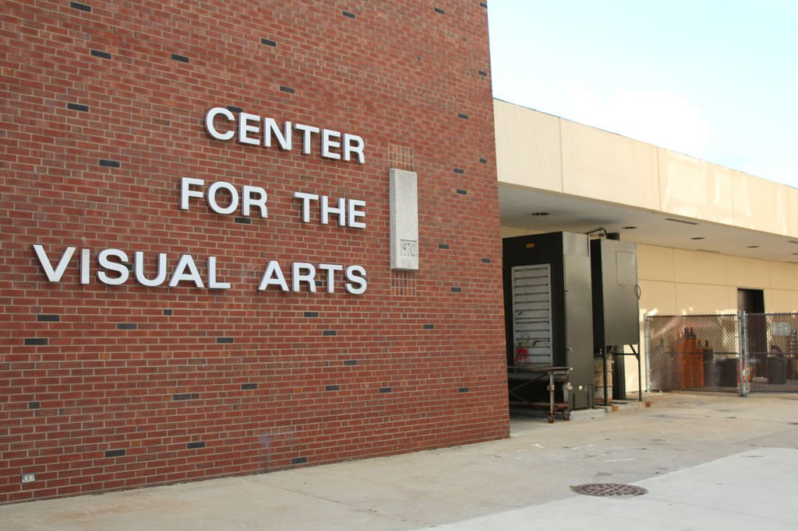

CTK Major Information
Requirement Information
CTK Course Catalog
Creative Technologies Program (CTK)

116 Center for Visual Arts
Phone:
(309) 438-2875
Director:
Rose Marshack
Degrees Offered:
B.A., B.S.